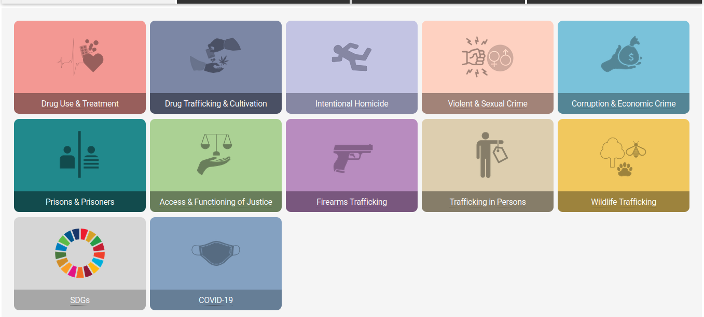
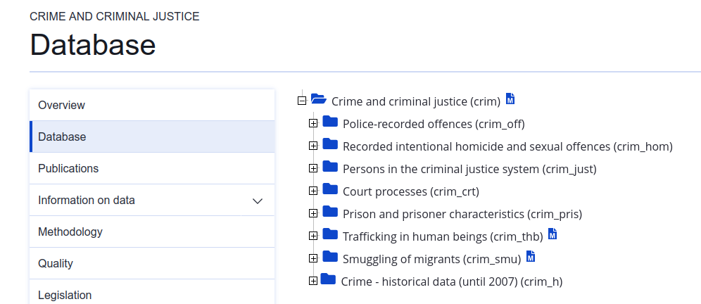
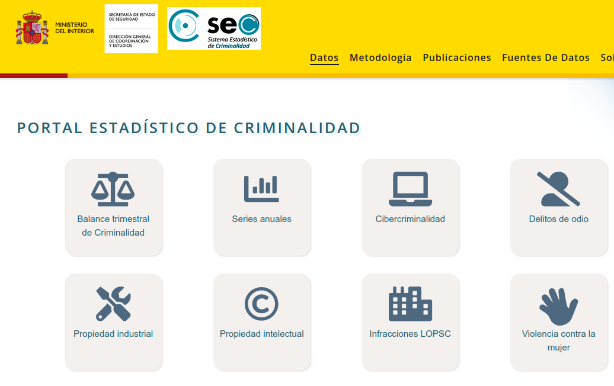
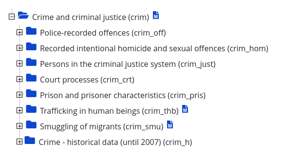
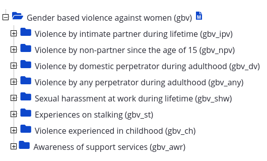

![]()
1 Intro
No veo mucho la tele, pero hace un par de años cuando de casualidad veía un telediario, siempre aparecía alguna noticia sobre okupación y/o MENAS1, o sobre la situación alarmante en cuanto a criminalidad en Barcelona2. Ahora parece que menos, ahora se vuelcan con la guerra y la necesidad de rearmarse.
La sensación que a mi me daba es que las teles, los medios, quieren, o al menos contribuyen (mucho) a crear la sensación de que España es un país inseguro; sin embargo, esta idea contrasta con mi impresión (avalada con la lectura de algunos informes sustentados en datos oficiales) de que España es un país bastante/relativamente seguro. Bueno, por lo que veo, esta idea no es sólo una sensación mía, (Näsi et al. 2021).
Quiero ver, usando datos oficiales, cómo es la situación de España en cuanto a incidencia delictiva
Esta contradicción entre lo que veo en los medios y mi impresión/opinión me ha llevado a iniciar este post cuyo objetivo es comparar la incidencia delictiva en España con la de otros países. No soy, para nada, un experto en comportamientos y datos delictivos, pero sí estoy acostumbrado a trabajar con datos. Veremos que nos dicen los datos!!
Creo que este proyecto no me ocupará un solo post sino que me planteo hacer una serie de posts y posiblemente, al final, un artículo científico, vorem!!!. Este primer post sirve solo para iniciar el proyecto de investigación.
Mi intención es hacer una serie de tres posts: en el primero de ellos utilizaré datos internacionales con el mayor número de países posibles, vamos utilizaré datos del “mundo”; en el segundo post utilizaré datos de nuestro entorno europeo, concretamente de Eurostat y, finalmente, utilizaré datos oficiales españoles, tanto del INE como del Ministerio del Interior.
2 Datos
Lógicamente para realizar el proyecto, me hacían falta datos, así que me puse a buscar. Podía haber ido a Eurostat pero como quería datos del “mundo” empecé buscando en la web del Banco Mundial (WB), pero finalmente acabé encontrando los datos que necesitaba en la UNDOC.
Empece buscando datos en la web del WB pero…
2.1 Busqueda de datos
Como he dicho, empecé buscando datos sobre delitos en el Banco Mundial. La razón es que en clase hacemos un ejercicio con datos de homicidios provenientes del Banco Mundial3. El Banco mundial (WB) es una organización multinacional creada en 1944, actualmente con 189 países miembros, cuyo propósito declarado es reducir la pobreza, (Wikipedia, «Banco Mundial» 2024).
La web del Banco Mundial tiene muuuuuuchos datos, están aquí, pero sobre criminalidad solo ví4 datos sobre Intentional homicides5, Battle-related deaths6 y Internally displaced persons, new displacement associated with disasters7; salvo el primero, no es lo que estamos acostumbrados a pensar cuando pensamos en delitos/violencia.
Hay varios paquetes de R para acceder a la API del WB, concretamente 4: WDI, wbstats, worldbank y wbwdi. En clase uso WDI para hacer algunos ejemplos; por eso empecé a buscar datos en la web del Banco Mundial, pero resulta que finalmente me dirigieron a la Oficina de las Naciones Unidas para drogas y crimen: UNDOC.
Durante el proceso de búsqueda de datos, también encontré el paquete crimedata que permite acceder a police-recorded crime data from large US cities using the Crime Open Database (CODE)8
3 Intenciones
Tras esta búsqueda inicial de datos, mi intención es hacer tres posts:
Espero hacer 3 posts sobre delitos:
1. con datos UNDOC
2. con datos de Eurostat
3. con datos del Mº del Interior

- Comparativa a nivel europeo con datos de Eurostat. Concretamente de la Crime and criminal justice database

- Comparativa interna entre las provincias y municipios españoles usando datos del Ministerio del Interior. Los datos están aquí

… y si al final me animo a escribir un “paper”, pues mejor que mejor.
Bueno, pues vamos al lío, esto me va a llevar tiempo!!! Espero divertirme!!
4 Procesado de datos
Finalmente he decidido explicar aquí cómo llevé a cabo el procesado de datos
4.1 UNDOC
Para la comparación internacional, utilizaré datos de la Oficina de las Naciones Unidas para drogas y crimen: UNDOC. Hay un paquete de R para acceder a su API, es el paquete DDSQLtools, pero no se actualiza desde hace 4 años, así que me decidí a procesar los datos por mis propios medios.
Para la comparación internacional usaré datos de la UNDOC
Categorías de delitos
La UNDOC tiene muchos datos sobre delitos, además organizados en varias categorías.
Entre los datos que me llamaron la atención (y que voy a procesar) están las categorías:
Me centré en 3 categorías de delitos, descargando y procesando un total de 27 tipos de delitos
Intentional Homicide: los datos están aquí. Son datos con mucho detalle porque tiene posibilidad de filtrar por genero, edad, medio, situación etc… etc… pero me centré en un único indicador sin tener en cuenta los “detalles”: “Victims of intentional homicide”
Violent & Sexual Crime: los datos están aquí. Contienen también mucho detalle, pero me centré en procesar 10 indicadores: Serious assault, Kidnapping, Sexual violence, Sexual violence: Rape, Sexual violence: Sexual assault, Sexual violence: Other acts of sexual violence, Sexual Exploitation, Acts intended to induce fear or emotional distress y Acts intended to induce fear or emotional distress: Cyber-related
Corruption & Economic Crime: los datos están aquí. Contienen 16 indicadores: Corruption, Corruption: Bribery, Corruption: Other acts of corruption, Smuggling of migrants, Burglary, Theft, Theft: of a motorized vehicle, Fraud, Fraud: Cyber-related (Cy), Money laundering, Unlawful access to a computer system, Unlawful interference with a computer system or computer data, Acts that cause environmental pollution or degradation, Acts involving the movement of dumping of waste, Trade or possession of protected or prohibited species of faune and flora, Acts that result in the depletion of degradation of natural resources
Además, no los voy a procesar, pero también me llamó la atención la categoría:
- Prisons & Prisoners: los datos están aquí. Contiene datos sobre personas en la carcel por Intentional Homicide, Rape, Drug trafficking y Bribery; además diferencia entre personas con y sin sentencia, etc … etc …
Procesamiento de los datos
Los datos los descargué en febrero de 2025 y los procesé con el script /my_mungings.2024a/blog_01_INE/007_UNDOC_crimenes/02_fusionar-y-exportar-datos_UNdoc.R. Allí generé 2 conjuntos de datos que posteriormente alojé en mi paquete de datos pjpv.pkg.datos.2024; concretamente son los ficheros:
UNDOC_delitos_tipologia_1990_2023: contiene datos de 1990 a 2023 de 212 países (o regiones) sobre 27 tipos de delitos. Es el conjunto de datos que voy a usar en el postUNDOC_delitos_x_relacion_2013_23; contiene datos de 2013 a 2022 de 49 países sobre 2 tipos de delitos: Victims of serious assault y Victims of sexual violence. En este data.frame sí que mantuve la información sobre la relación de la victima con el perpretador del delito, pero en principio no voy a usar estos datos.
En este post solo voy a usar los datos del primer dataset. Los 27 tipos de delitos que contiene son:
Más procesamiento de los datos
Como he dicho más arriba, los datos que descargué de la UNDOC los procesé9 en mi blog local “my_mungins” y los 2 data.frames resultantes los alojé en mi paquete de datos.
Después de procesar los datos me di cuenta que solo iba a usar el dataset UNDOC_delitos_tipologia_1990_2023 que como he dicho, contiene datos de 1990 a 2023 de 212 países (o regiones) sobre 27 tipos de delitos. También me di cuenta que iba a necesitar geometrías de esos 212 países/regiones para poder hacer coropletas.
Obtención de las geometrías
Para obtener geometrías utilice el paquete giscoR que facilita usar en R los datos de GISCO, the Geographic Information System de la Commisión Europea. Concretamente utilice este dataset que contiene 259 geometrías.
He de recordar que en los datos que voy a usar de UNDOC habían 212 países/territorios. Cuando fusioné estos datos con las geometrías de GISCO, se obtuvieron las geometrías de 200 de ellos, pero quedaron sin fusionar 12 entidades territoriales. Habían 4 tipos de problemas:
Tuve que reconstruir los datos para el Reino Unido (UK) a partir de sus 3 regiones
- Los datos de UNDOC para el Reino Unido estaban separados en 3 entidades (Escocia, Irlanda del Norte y el resto; es decir, Inglaterra y Gales). Deje esos datos tal cual, pero a partir de ellos generé los datos para todo el Reino Unido. La geometría del Reino Unido sí se encontraba en GISCO, pero para obtener las geometrías de las 3 entidades territoriales originales para UK tuve que usar otro dataset de GISCO, concretamente:
- Los datos de UNDOC para Francia hacían referencia a Francia, pero también, para algunos delitos, a los territorios de ultramar franceses. En concreto hay datos para los siguientes territorios
"France","Guadeloupe","French Guiana","Martinique","Réunion","Mayotte"y"Saint Martin (French Part)". Deje todos los datos tal cual, pero claro, al intentar fusionar con las geometrías de GISCO, solo se fusionaba con"France". Para encontrar geometrías para el resto de entidades francesas (los territorios de ultramar) tuve que usar otro dataset de GISCO, consiguiendo finalmente enlazar todas las entidades territoriales francesas excepto"Saint Martin (French Part)". El dataset que usé para ello fue:
En los datos de delitos de la UNDOC hay datos referentes a Kosovo ( “Kosovo under UNSCR 1244”). Kosovo tiene datos para algunos tipos de delitos para el periodo de 2008 a 2021. Deje estos datos tal cual, pero no encontré su geometría en GISCO. Finalmente encontré geometría para Kosovo en otro dataset (no de GISCO) pero decidí no incorporarla al análisis; es decir, los datos de Kosovo sí estarán en el análisis, pero no se mostrarán en las coropletas que vaya haciendo.
En el caso de Irak, los datos de delitos de la UNDOC, tienen 3 entidades territoriales:
"Iraq", "Iraq (Kurdistan Region)" e "Iraq (Central Iraq)". Decidí quitar las observaciones, no eran muchas, de"Iraq (Kurdistan Region)" e "Iraq (Central Iraq)", dejando sólo las de “Iraq”. Estas observaciones lógicamente se fusionaron con la geometría de Irak obtenida de GISCO.
Las geometrías para los datos UNDOC están en pjpv.pkg.datos.2024::UNDOC_geometrias
Finalmente, exporté el dataset de geometrías ya preparado para trabajar con los datos de crímenes de UNDOC, concretamente está en pjpv.pkg.datos.2024::UNDOC_geometrias
4.2 Eurostat
Encontré 2 bases de datos: 1) Crime and criminal justice database, y 2) Gender based violence. De momento me centraré en la primera
Me centro en la “Crime and criminal justice” database


Procesado de los datos
Utilicé el paquete eurostat para buscar tablas y descargarlas. Procese los datos con el script 01_bajar-datos-y-exportar_Eurostat.R
Buscando en Eurostat al final seleccioné 6 tablas de datos (pero finalemente solo exporté 5 de ellas:
crim_off_cat: “Police-recorded offences by offence category” [son datos de 41 países (no estaba UK, pero sí England y Walles, Scothland y N.Ireland; UK lo añadí a mano) para 2008-2022 y para 21 categorías de delitos. Añadí a mano las observaciones de UK (creados a partir de sus 3 regiones). Si quieres hacer un mapa, usa las geometrías:pkg::geo_eurostat_crime_paises. Una vez arreglados los datos de esta tabla, los exporté a mi paquete de datos; concretamente al ficherocrime_1_eurostat_paises_2008_22crim_gen_reg: “Police-recorded offences by NUTS 3 regions” [son datos de 1834 entidades para 2008-2022 y para 7 categorías de delitos.
Tiene datos de NUTS0 (países), NUTS1, NUTS2 (CC.AA) y NUTS3 (provincias): España tiene 89 filas. No hay datos para UK ni para England o Scothland. Una vez arreglados los datos de esta tabla, los exporté a mi paquete de datos; concretamente al ficherocrime_2_eurostat_nuts3_2008_22Si quieres hacer mapas, usagiscoR::gisco_get_nuts(). Con esto se enlazan 1747 entidades territoriales /incluidos los países NUTS0) no se enlazan 87 entidades (fundamentalmente son las “Extra-regions”)crim_gen: “Crimes recorded by the police by offence category” [son datos de 39 países para 1993-2007 y para 7 categorías de delitos. Tenía datos de nº de delitos pero no tenía datos para las tasas, pero coseguí crearlas usando datos de población de la tablademo_pjan(“Average annual population to calculate regional GDP data by metropolitan region”). Hay datos para UK pero no para England … Evidentemente esta FRA, pero también está Francia metropolitana (“FX”). Añadí a mano las observaciones de UK (creados a partir de sus 3 regiones) Si quieres hacer un mapa, usa las geometrías:pkg::geo_eurostat_crime_paises. Una vez arreglados los datos de esta tabla, los exporté a mi paquete de datos; concretamente al ficherocrime_3_eurostat_paises_1993_07met_crim_gen: “Crimes recorded by the police by metropolitan regions” [son datos de 318 “ciudades” para 2008-2022 y para 7 categorías de delitos. UK no esta para nada (ni England …). Para España hay 25 filas: 1 para el país, 23 para ciudades (bueno son más bien áreas metropolitanas), y la última fila es “Non-metropolitan regions in Spain”. La tabla 4 tampoco tenía datos para las tasas así que tuve que construirlas usando datos de población de la tablamet_10r_3pgdp. Una vez arreglados los datos de esta tabla, los exporté a mi paquete de datos; concretamente al ficherocrime_4_eurostat_ciudades_2008_22
Intenté encontrar una geometría para hacer mapas, pero solo se enlazaban los países con giscoR::gisco_get_countries(year = 2024, resolution = "20"); concretamente con geo_paises$CNTR_ID se enlazan 35 (los países); 283 no se enlazan
-
sdg_16_20: “Population reporting occurrence of crime, violence or vandalism in their area by poverty status” [son datos del % de personas que reporta crímenes: para 43 países para 2003-2023 y para 3 categorías de personas (Total, arriba y abajo del 60% de la mediana). Si quieres hacer un mapa, usa las geometrías:pjpv.pkg.datos.2024::geo_eurostat_crime_paises. Una vez arreglados los datos de esta tabla, los exporté a mi paquete de datos; concretamente al ficherocrime_6_eurostat_reporting_2003_23
- Al final fusioné las tablas 1 y 3 para tener datos de países con periodo muestral amplio, pero sólo se pueden fusionar 4 de los 7 tipos de delitos que tiene la tabla 3. Quedaron 39 países. Una vez arreglados los datos de esta tabla, los exporté a mi paquete de datos; concretamente al fichero
crime_1_3_eurostat_paises_1993_22
Geometrías
Me preparé las geometrías en mi blog interno, concretamente con /008_Eurostat_crimenes/02_obtener-geometrias.R. Usé el paquete giscoR. Las funciones de giscoR que puedo usar son:
Construí el dataset pjpv.pkg.datos.2024::geo_eurostat_crime_paises que me sirve para hacer mapas con las tablas: crime_1_eurostat_paises_2008_22, crime_3_eurostat_paises_1993_07, crime_1_3_eurostat_paises_1993_22 y crime_6_eurostat_reporting_2003_23
Para cargar las geometrías arregladas:
Detalles
Trabajé también la tabla
crim_hom_ocit: “Intentional homicide offences in largest cities”; pero no la exporté porqué eran datos de ciudades y para ESP sólo estaba MadridLa tabla 1 y tabla 2 se podían fusionar (para países y 5 tipos de delitos) pero al final no lo hice. me planteé hacerlo porque entre la tabla 1 y la tabla 2 (en los datos de países) había pequeñas diferencias a veces. Al final pensé que no merecía la pena fusionarlas
Datos al pkg
Grabé 6 df’s en el pkg de datos, veámoslos un poco:
1. crime_1_eurostat_paises_2008_22
Añadí a mano las observaciones de UK (creados a partir de sus 3 regiones) Si quieres hacer un mapa, usa las geometrías: pkg::geo_eurostat_crime_paises
Tiene 14 variables, aquí muestro las 5 primeras: se ve que hay datos de 42 “países” y de 21 tipos de delitos:
Código
| variables | nn_unique | unique_values |
|---|---|---|
| geo_code | 42 | AL - AT - BA - BE - BG - CH - CY - CZ - DE - DK - EE - EL - ES - FI - FR - HR - HU - IE - IS - IT - LI - LT - LU - LV - ME - MK - MT - NL - NO - PL - PT - RO - RS - SE - SI - SK - TR - UK - UKC-L - UKM - UKN - XK |
| geo | 42 | Albania - Austria - Belgium - Bosnia and Herzegovina - Bulgaria - Croatia - Cyprus - Czechia - Denmark - England and Wales - Estonia - Finland - France - Germany - Greece - Hungary - Iceland - Ireland - Italy - Kosovo* - Latvia - Liechtenstein - Lithuania - Luxembourg - Malta - Montenegro - Netherlands - North Macedonia - Northern Ireland (UK) (NUTS 2021) - Norway - Poland - Portugal - Romania - Scotland (NUTS 2021) - Serbia - Slovakia - Slovenia - Spain - Sweden - Switzerland - Türkiye - United Kingdom |
| iccs_code | 21 | ICCS0101 - ICCS0102 - ICCS020111 - ICCS020221 - ICCS0301 - ICCS03011 - ICCS03012 - ICCS0302 - ICCS030221 - ICCS0401 - ICCS0501 - ICCS05012 - ICCS0502 - ICCS05021 - ICCS0601 - ICCS0701 - ICCS0703 - ICCS07031 - ICCS07041 - ICCS0903 - ICCS09051 |
| iccs | 21 | Acts against computer systems - Attempted intentional homicide - Bribery - Burglary - Burglary of private residential premises - Child pornography - Corruption - Fraud - Intentional homicide - Kidnapping - Money laundering - Participation in an organized criminal group - Rape - Robbery - Serious assault - Sexual assault - Sexual exploitation - Sexual violence - Theft - Theft of a motorized vehicle or parts thereof - Unlawful acts involving controlled drugs or precursors |
| year | 15 | 2008 - 2009 - 2010 - 2011 - 2012 - 2013 - 2014 - 2015 - 2016 - 2017 - 2018 - 2019 - 2020 - 2021 - 2022 |
Abajo, el detalle de los 21 tipos de delitos:
| iccs_code | iccs |
|---|---|
| ICCS0101 | Intentional homicide |
| ICCS0102 | Attempted intentional homicide |
| ICCS020111 | Serious assault |
| ICCS020221 | Kidnapping |
| ICCS0301 | Sexual violence |
| ICCS03011 | Rape |
| ICCS03012 | Sexual assault |
| ICCS0302 | Sexual exploitation |
| ICCS030221 | Child pornography |
| ICCS0401 | Robbery |
| ICCS0501 | Burglary |
| ICCS05012 | Burglary of private residential premises |
| ICCS0502 | Theft |
| ICCS05021 | Theft of a motorized vehicle or parts thereof |
| ICCS0601 | Unlawful acts involving controlled drugs or precursors |
| ICCS0701 | Fraud |
| ICCS0703 | Corruption |
| ICCS07031 | Bribery |
| ICCS07041 | Money laundering |
| ICCS0903 | Acts against computer systems |
| ICCS09051 | Participation in an organized criminal group |
2. crime_2_eurostat_nuts3_2008_22
- Si quieres hacer mapa, usa
giscoR::gisco_get_nuts(). Con esto se enlazan 1747 entidades territoriales /incluidos los países NUTS0) no se enlazan 87 entidades (fundamentalmente son las “Extra-regions”)
Código
| variables | nn_unique | unique_values |
|---|---|---|
| geo_code | 1834 | AL - AL0 - AL01 - AL011 - AL012 - AL013 - AL014 - AL015 - AL02 - AL021 - AL022 - AL03 - AL031 - AL032 - AL033 - AL034 - AL035 - AT - AT1 - AT11 - AT111 - AT112 - AT113 - AT12 - AT121 - AT122 - AT123 - AT124 - AT125 - AT126 - AT127 - AT13 - AT130 - AT2 - AT21 - AT211 - AT212 - AT213 - AT22 - AT221 - |
| geo | 1834 | A Coruña - Aargau - Abruzzo - Achaia - Achterhoek - Adana - Adana, Mersin - Adıyaman - Afyonkarahisar - Agder - Agder og Rogaland (statistical region 2016) - Agder og Sør-Østlandet - Agglomeratie 's-Gravenhage (NUTS 2021) - Agglomeratie Haarlem (NUTS 2021) - Agglomeratie Leiden en Bollenstreek (NUTS |
| iccs_code | 7 | ICCS0101 - ICCS02011 - ICCS0401 - ICCS0501 - ICCS05012 - ICCS0502 - ICCS050211 |
| iccs | 7 | Assault - Burglary - Burglary of private residential premises - Intentional homicide - Robbery - Theft - Theft of a motorized land vehicle |
| year | 15 | 2008 - 2009 - 2010 - 2011 - 2012 - 2013 - 2014 - 2015 - 2016 - 2017 - 2018 - 2019 - 2020 - 2021 - 2022 |
Abajo, el detalle de los 7 tipos de delitos:
| iccs_code | iccs |
|---|---|
| ICCS0101 | Intentional homicide |
| ICCS02011 | Assault |
| ICCS0401 | Robbery |
| ICCS0501 | Burglary |
| ICCS05012 | Burglary of private residential premises |
| ICCS0502 | Theft |
| ICCS050211 | Theft of a motorized land vehicle |
3. crime_3_eurostat_paises_1993_07
Añadí a mano las observaciones de UK (creados a partir de sus 3 regiones) Si quieres hacer un mapa, usa las geometrías: pkg::geo_eurostat_crime_paises
Código
| variables | nn_unique | unique_values |
|---|---|---|
| geo_code | 40 | AT - BE - BG - CH - CY - CZ - DE - DK - EE - EL - ES - FI - FR - FX - HR - HU - IE - IS - IT - LI - LT - LU - LV - ME - MK - MT - NL - NO - PL - PT - RO - RS - SE - SI - SK - TR - UK - UKC-L - UKM - UKN |
| geo | 40 | Austria - Belgium - Bulgaria - Croatia - Cyprus - Czechia - Denmark - England and Wales - Estonia - Finland - France - Germany - Greece - Hungary - Iceland - Ireland - Italy - Latvia - Liechtenstein - Lithuania - Luxembourg - Malta - Metropolitan France - Montenegro - Netherlands - North Macedonia - Northern Ireland (UK) (NUTS 2021) - Norway - Poland - Portugal - Romania - Scotland (NUTS 2021) - Serbia - Slovakia - Slovenia - Spain - Sweden - Switzerland - Türkiye - United Kingdom |
| iccs_code | 7 | ICCS0101 - ICCS02-04 - ICCS0401 - ICCS05012 - ICCS050211 - ICCS0601 - TOTAL |
| iccs | 7 | Acts causing harm or intending to cause harm to the person, injurious acts of a sexual nature and acts against property involving violence or threat against a person - Burglary of private residential premises - Intentional homicide - Robbery - Theft of a motorized land vehicle - Total - Unlawful acts involving controlled drugs or precursors |
| year | 15 | 1993 - 1994 - 1995 - 1996 - 1997 - 1998 - 1999 - 2000 - 2001 - 2002 - 2003 - 2004 - 2005 - 2006 - 2007 |
Abajo, el detalle de los 7 tipos de delitos:
| iccs_code | iccs |
|---|---|
| ICCS0101 | Intentional homicide |
| ICCS02-04 | Acts causing harm or intending to cause harm to the person, injurious acts of a sexual nature and acts against property involving violence or threat against a person |
| ICCS0401 | Robbery |
| ICCS05012 | Burglary of private residential premises |
| ICCS050211 | Theft of a motorized land vehicle |
| ICCS0601 | Unlawful acts involving controlled drugs or precursors |
| TOTAL | Total |
4. crime_4_eurostat_ciudades_2008_22
-
met_crim_gen: “Crimes recorded by the police by metropolitan regions” [son datos de 318 “ciudades” para 2008-2022 y para 7 categorías de delitos. UK no esta para nada (ni England …). Para España hay 25 filas: 1 para el país, 23 para ciudades (bueno son más bien áreas metropolitanas), y la última fila es “Non-metropolitan regions in Spain”. La tabla 4 tampoco tenía datos para las tasas así que tuve que construirlas usando datos de población de la tablamet_10r_3pgdp
Código
| variables | nn_unique | unique_values |
|---|---|---|
| metroreg_code | 318 | AL - AL_NM - AT - AT_NM - AT001MC - AT002M - AT003M - AT004M - AT005M - BE - BE_NM - BE001MC - BE002M - BE003M - BE004M - BE005M - BE007M - BG - BG_NM - BG001MC - BG002M - BG003M - BG004M - CH - CH_NM - CH001M - CH002M - CH003M - CH004MC - CH005M - CH006M - CH007M - CY - CY001MC - CZ - CZ_NM - CZ001MC - CZ002M - CZ003M - CZ004M - DE - DE_NM - DE001MC - DE002M - DE003M - DE004M - DE005M - DE007M - DE008M - DE009M - DE011M - DE012M - DE013M - DE014M - DE017M - DE018M - DE019M - DE020M - DE021M - D |
| metroreg | 318 | A Coruña - Aachen - Aalborg - Albania - Alicante/Alacant - Elche/Elx - Amiens - Amsterdam - Angers - Annecy (FR) / Genève (CH) - Antwerpen - Århus - Arnhem - Nijmegen - Aschaffenburg - Augsburg - Austria - Barcelona - Bari - Basel - Bayreuth - Belgium - Bergamo - Bergen - Berlin - Bern - Besançon - Bialystok - Bielefeld - Bielsko-Biala - Bilbao - Bocholt - Bologna - Bonn - Bordeaux - Brasov - Bratislava - Braunschweig-Salzgitter-Wolfsburg - Breda - Bremen - Bremerhaven - Brescia - Brest - Brno - |
| iccs_code | 7 | ICCS0101 - ICCS02011 - ICCS0401 - ICCS0501 - ICCS05012 - ICCS0502 - ICCS050211 |
| iccs | 7 | Assault - Burglary - Burglary of private residential premises - Intentional homicide - Robbery - Theft - Theft of a motorized land vehicle |
| year | 15 | 2008 - 2009 - 2010 - 2011 - 2012 - 2013 - 2014 - 2015 - 2016 - 2017 - 2018 - 2019 - 2020 - 2021 - 2022 |
5. crime_6_eurostat_reporting_2003_23
Son datos del % de gente que reporta crímenes a la policia:
Si quieres hacer un mapa, usa las geometrías: pjpv.pkg.datos.2024::geo_eurostat_crime_paises
Código
| variables | nn_unique | unique_values |
|---|---|---|
| geo_code | 43 | AL - AT - BE - BG - CH - CY - CZ - DE - DK - EA19 - EA20 - EE - EL - ES - EU - EU27_2007 - EU27_2020 - EU28 - FI - FR - HR - HU - IE - IS - IT - LT - LU - LV - ME - MK - MT - NL - NO - PL - PT - RO - RS - SE - SI - SK - TR - UK - XK |
| geo | 43 | Albania - Austria - Belgium - Bulgaria - Croatia - Cyprus - Czechia - Denmark - Estonia - Euro area - 19 countries (2015-2022) - Euro area – 20 countries (from 2023) - European Union - 27 countries (2007-2013) - European Union - 27 countries (from 2020) - European Union - 28 countries (2013-2020) - European Union (EU6-1958, EU9-1973, EU10-1981, EU12-1986, EU15-1995, EU25-2004, EU27-2007, EU28-2013, EU27-2020) - Finland - France - Germany - Greece - Hungary - Iceland - Ireland - Italy - Kosovo* - Latvia - Lithuania - Luxembourg - Malta - Montenegro - Netherlands - North Macedonia - Norway - Poland - Portugal - Romania - Serbia - Slovakia - Slovenia - Spain - Sweden - Switzerland - Türkiye - United Kingdom |
| year | 19 | 2003 - 2004 - 2005 - 2006 - 2007 - 2008 - 2009 - 2010 - 2011 - 2012 - 2013 - 2014 - 2015 - 2016 - 2017 - 2018 - 2019 - 2020 - 2023 |
6. crime_1_3_eurostat_paises_1993_22
Al final fusioné las tablas 1 y 3 : crime_1_eurostat_paises_2008_22 y crime_3_eurostat_paises_1993_07 para tener datos de países con periodo muestral amplio, pero sólo se pueden fusionar 4 de los 7 tipos de delitos que tiene la tabla 3; pero claro al fusionar los 21 + 7 tipos de delitos, quedaron 24 tipos de delitos (3 delitos de la segunda tabla que no estaban en la primera)
Quedaron 43 países
Añadí a mano las observaciones de UK (creados a partir de sus 3 regiones) Si quieres hacer un mapa, usa las geometrías: “pkg::geo_eurostat_crime_paises”
Código
| variables | nn_unique | unique_values |
|---|---|---|
| geo_code | 43 | AL - AT - BA - BE - BG - CH - CY - CZ - DE - DK - EE - EL - ES - FI - FR - FX - HR - HU - IE - IS - IT - LI - LT - LU - LV - ME - MK - MT - NL - NO - PL - PT - RO - RS - SE - SI - SK - TR - UK - UKC-L - UKM - UKN - XK |
| geo | 43 | Albania - Austria - Belgium - Bosnia and Herzegovina - Bulgaria - Croatia - Cyprus - Czechia - Denmark - England and Wales - Estonia - Finland - France - Germany - Greece - Hungary - Iceland - Ireland - Italy - Kosovo* - Latvia - Liechtenstein - Lithuania - Luxembourg - Malta - Metropolitan France - Montenegro - Netherlands - North Macedonia - Northern Ireland (UK) (NUTS 2021) - Norway - Poland - Portugal - Romania - Scotland (NUTS 2021) - Serbia - Slovakia - Slovenia - Spain - Sweden - Switzerland - Türkiye - United Kingdom |
| iccs_code | 24 | ICCS0101 - ICCS0102 - ICCS02-04 - ICCS020111 - ICCS020221 - ICCS0301 - ICCS03011 - ICCS03012 - ICCS0302 - ICCS030221 - ICCS0401 - ICCS0501 - ICCS05012 - ICCS0502 - ICCS05021 - ICCS050211 - ICCS0601 - ICCS0701 - ICCS0703 - ICCS07031 - ICCS07041 - ICCS0903 - ICCS09051 - TOTAL |
| iccs | 24 | Acts against computer systems - Acts causing harm or intending to cause harm to the person, injurious acts of a sexual nature and acts against property involving violence or threat against a person - Attempted intentional homicide - Bribery - Burglary - Burglary of private residential premises - Child pornography - Corruption - Fraud - Intentional homicide - Kidnapping - Money laundering - Participation in an organized criminal group - Rape - Robbery - Serious assault - Sexual assault - Sexual exploitation - Sexual violence - Theft - Theft of a motorized land vehicle - Theft of a motorized vehicle or parts thereof - Total - Unlawful acts involving controlled drugs or precursors |
| year | 30 | 1993 - 1994 - 1995 - 1996 - 1997 - 1998 - 1999 - 2000 - 2001 - 2002 - 2003 - 2004 - 2005 - 2006 - 2007 - 2008 - 2009 - 2010 - 2011 - 2012 - 2013 - 2014 - 2015 - 2016 - 2017 - 2018 - 2019 - 2020 - 2021 - 2022 |
4.3 Ministerio del Interior
Son los primeros datos que procesé. Tengo registrado el proceso de limpieza de los datos en mi blog interno y por supuesto tengo los scripts, pero … veremos cuando tendré tiempo para contar aquí cómo procesé estos datos; antes quiero analizar los datos de la UNDOC y de Eurostat
Veremos cuando tendré tiempo para contar como procesé estos datos
Referencias
«Banco Mundial». 2024. Wikipedia, la enciclopedia libre. https://es.wikipedia.org/w/index.php?title=Banco_Mundial&oldid=164322887.
Näsi, Matti, Maiju Tanskanen, Janne Kivivuori, Paula Haara, y Esa Reunanen. 2021. «Crime News Consumption and Fear of Violence: The Role of Traditional Media, Social Media, and Alternative Information Sources». Crime & Delinquency 67 (4): 574-600. https://doi.org/10.1177/0011128720922539.
Notas
En realidad habría que decir, Menores Extranjeros No Acompañados, termino que hace evidente que los llamados MENAS son menores; además, como se explica aquí, el término MENA es “deshumanizante”: según el defensor del pueblo, «Les cosifica y contribuye a quitarles dignidad».↩︎
Al menos hace unos años, cuando gobernaba Ada Colau↩︎
El ejemplo de clase lo tengo en el script
52_script_WDI_homicidios.R↩︎Vuelvo a insistir en que, como he dicho anteriormente, no soy un experto; de hecho sé muy poquito sobre datos de delitos, pero … seguro que aprendo durante el proceso↩︎
En realidad estos datos vienen del proyecto “The Uppsala Conflict Data Program (UCDP)”, que puedes visitar aquí↩︎
Estos datos provienen de The Internal Displacement Monitoring Centre, que puedes visitar aquí↩︎
CODE es un proyecto alojado en OSF una plataforma/servicio que pretende apoyar la investigación. Puedes leer sobre ella en Wikipedia, concretamente aquí↩︎
En realidad los datos tuvieron poco procesamiento, solo tuve que quitar y homogeneizar cositas y tener cuidado porque, en mi opinión los datos en este caso era “demasiado largos” y estaban como preparados para contener información de edad, genero, relación con el delincuente, etc… que a mi no me hacía falta↩︎